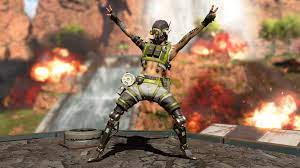

ASH
once a Doctor that was born human but was change into a skilled mercenary seeking revenge.
Abilities : able to throw a electrical rope that attachs to the ground and onto enemies to keep them from moving
ULTIMATE: Creates a teleportation pathway for herself , teamates, and enemies as well.
BANGALORE
The best soldier anyone could asked for. From a military family with high stardards in joining the armed forces, bangalore as servce for the IMC and is now brought in the battle games where she can proof her skills.
Abilities: Can shoot smoke grenades, that display thick white smoke to evade enemies.
Ultimate: Throws a red flare to call in a airstrike to deplete enemies health or even eliminate enemies.
BLOODHOUND
A hunter from the outlands and the best tracker the games has seen. blood hound hopes to win enough games to seek passage to valhalla when her time comes.
ABILITIES: Can scan a wave that marks enemies (red) that can be seen through all walls and structures, for the whole team to see.
ULTIMATE: (beast of the hunt) increase speed and highlights enemies for a duration of 30-40 seconds. also can scan every 5 seconds for teamates

CATALYST
Born on the planet boreas, catalyst has always been oddly weird to everyone but to her she likes being a outcast
ABILITIES: throws black goo-like substance that shoots up spikes when enemies are near. also can barricade doors
ULTIMIATE: CAN create a huge wall of black fluid that blind and slow enimies when pass through it.
CAUSTIC
A briliant scientist that worked at the hambert labs. trying to find the formulas needed to save dying crops in the outlands, discovered his skills can be used better off on human subjects.
ABILITIES: toxic Gas traps that exploded when enemies come close too. (also resistent to others gas)
ULTIMATE: deadly GAS grenade

CRYPTO
Abandoned orphan name Tae Joon that specilizes in hacking and ecrption. Joined the apex games to seek the ones who framed him for murder.
ABILITIES: Surveillance drone use to mark enemies or gather intel.
ULTIMATE: EMP burst
FUSE
Raise on solvo , a planet ruled by warlords who desire murder, mayhem and other mischeif. fuse is pyro maniac that loves things that go "BOOM!"
ABILITIES: shoots a cluster bomb that shoots other bombs and explode
ULTIMATE: ring of fire bombardment that surrounds a area with fire and marks enemies within that circle.
GIBRALTAR
A gentle giant legend who loves to protect those around him and finds honor doing so.
ABILITIES: Dome Shield to protect from enemy attacks
ULTIMATE: throws a red flare and a Bombarment airstrike rains down
HORIZON
a scientist who studied the limits of Energy and gravity. Former friends of ash(dr reid). Dr mary sommers was hired to find a solution to stop a cataclsmic energry crisis.
ABILITIES: Gravitational lift / is immune to fall impacts
ULTIMATE: throws a device that generates a blackhole that pulls players in
LIFELINE
From a wealthy family, AJay Che has dedicated her life with porviding medical assistance to those in need.
ABILITIES: Provides a drone that heals teamates
ULTIMATE: calls in a care package that provides healing materials, or upgraded shields.
LOBA
Raised in a wealthy family, loba was just 9 when she witness her own family get murdered by notorious assassin "Revenant". she now seeks her revenge in the games and hopes to find peace one day.
ABILITIES: teleportation jump drive that teleports you where you throw it.
ULTIMATE: A black market that allows players to access items in the surronding area.
MAD MAGGIE
Like fuse, margeret kohere also grew up on the planet solvo, she is one of the toughest female on the battlefield ready to elimate her opponents.
ABILITIES: can shoot a drill that goes up to 10 meters deep, and spit out fire on the other side
ULTIMATE: throws a ball that can explode when it touches a enemies, also leaves a trail of boosters for anyone can run over to increase speed.
MIRAGE
mirage is one of those guys you can have fun around.He loves to celebrate, especially when things are serious. Though he is a trickster on the field.
ABILIIES: can display a holographic decoy to make the enemies confused. also go invisible when using beacons, and reviving teamates
ULTIMATE: Can produce mulitple decoys to confused enemies.
NEWCASTLE
Lamont Craig is a father making his way into the fighting arena, recently a soldier for the IMC, it was discovered he is the brother to BANGALORE
ABILITIES: deploys shield for cover to protect from oncoming attacks. when reviving players he can also deploy a shield and go mobile while reviving
ULTIMATE: Can set a large barrier for cover.
OCTANE
Octavio silva is a daredevil who loves to do the most insane stunts. he lost both legs trying to win a race and using a hand grenade to launch himself pass the finish line. woke up in the hospital with both legs needed to be amputated due to the damage done.
ABLILTIES: injects a stim into himself to increase run speed.
ULTIMATE: can place a launch pad for himself and teammates.
PATHFINDER
A robotic scout named MRVN (mobile robotic versatile eNtity) who was recreated by scientist to solve the outlands energy crisis.
ABILITIES: can grapple and swing.
ULTIMATE: place a a long zipline for anyone to take for faster rotations.
RAMPART
Parekh is a blue-collar who loves to to craft guns. she has one of the biggest guns out in the wild west and outlands.
ABILITIES: rampart walls that can prevent damage.
ULTIMATE: a turret gun named "sheila"
REVENANT
used to be human who was the greatest hitman. He now hunts who have changed him to this evil looking robotic machine.
ABILITES: throws a device that deals damage and disables enemy abilities. / can also climb up walls faster
ULTIMATE: death totem for everybody to use to have 2nd chance at life for 30-40 seconds.
SEER
was considered a cursed child, after his worlds moon got strucked by a metoer the day he was born. he was foreseen that he would bring great pain and suffering to the world
ABILITIES: can scan for enemies and disabil there abilites for a brief second
ULTIMATE: throws a sphere of micro drones that reveal the location of enemies moving quickly or firing their weapons within

VALKYRIE
kairi imahara is a hell of a pilot. she used to watch her dad who was one of the greatest pilots to fly but one morning he died unknowly. she now seeks who put her father in harms way.
ABILITES: can fly with her jetpack and shoot a barage of missles
ULTIMATE: can take herself and the team to the sky for a redeployment flight
VANTAGE
a sniper specialist who was raised and born on a icy world of Pagos.MARA was raised by a survivalist who showed her how to survive ans shoot.
ABILITES: can direct a bat and can leap across to it where it is position at
ULTIMATE: sniper rifle that is powerful with little to no bullet drop

WATTSON
a static defended who is really good at protecting her own self and teammates
ABILITES: can place electrical fences that does damage to enemies
ULTIMATE: places a trophy system that counter attacks explosives.
WRAITH
a whirlwind fighter ,able to execute deadly attacks and manipulate spacetime by opening rifts in the fabric of reality — but those abilities came at a price
ABILITES: evades using a void space, avoiding all damage.
ULTIMATE: places a portal from 2 points.